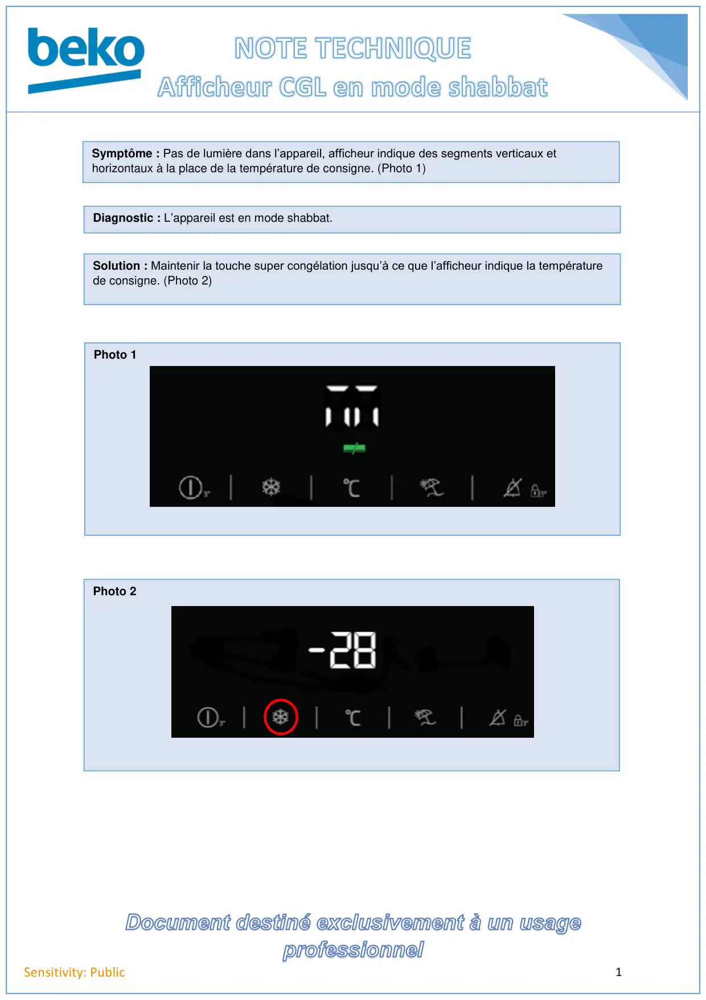

1Sensitivity: PublicPhoto 1Photo 2Symptôme : Pas de lumière dans l’appareil, afficheur indique des segments verticaux ethorizontaux à la place de la température de consigne. (Photo 1)Diagnostic : L’appareil est en mode shabbat.Solution : Maintenir la touche super congélation jusqu’à ce que l’afficheur indique la températurede consigne. (Photo 2)
1 / 1